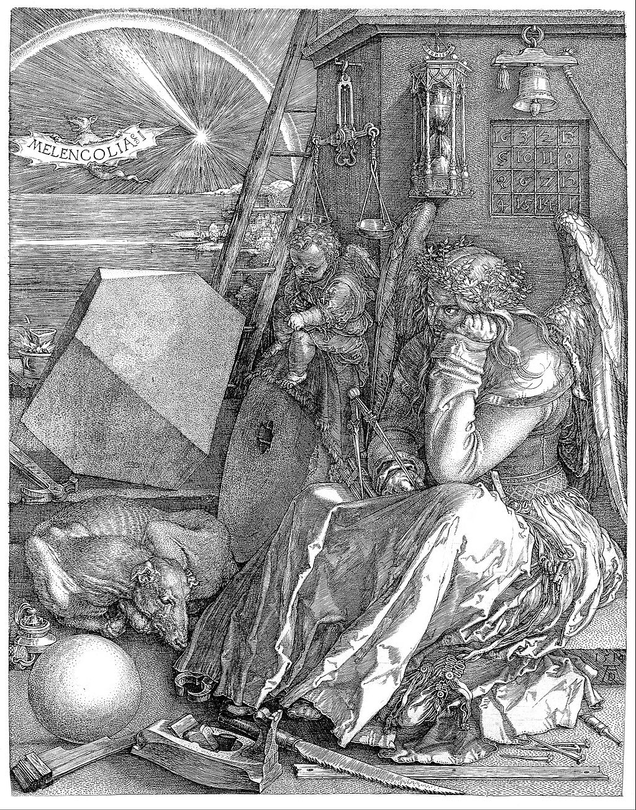

<head>
<meta charset="UTF-8" />
<meta name="keywords" content="drawing, painting" />
<meta name="description" content="drawings by Sunjy" />
<title>Sunjy</title>
<link rel="shortcut icon" type="image/x-icon" href="../../mImages/mCommon/favicon.ico" media="screen" />
<link rel="stylesheet" type="text/css" href="../../mCsses/mCommon/mCssA.css" />
<link rel="stylesheet" type="text/css" href="../../mCsses/mCommon/mCssB.css" />
<link rel="stylesheet" type="text/css" href="../../mCsses/mCommon/mCssC.css" />
<link rel="stylesheet" type="text/css" href="../../mCsses/mCommon/mCssD.css" />
<link rel="stylesheet" type="text/css" href="../../mCsses/mContent/mCssA.css" />
<link rel="stylesheet" type="text/css" href="../../mCsses/mContent/mCssB.css" />
<link rel="stylesheet" type="text/css" href="../../mCsses/mContent/mCssC.css" />
<link rel="stylesheet" type="text/css" href="../../mCsses/mContent/mCssD.css" />
</head>
<script type="text/javascript" src="../../mScripts/mContent/mContentAA.js" /></script>
<script type="text/javascript" src="../../mScripts/mContent/mContentAB.js" /></script>
<script type="text/javascript" src="../../mScripts/mContent/mContentAC.js" /></script>
<script type="text/javascript" src="../../mScripts/mContent/mContentAD.js" /></script>
<script type="text/javascript"></script> 
<script type="text/javascript">
document.write('<div class="mImgAbsolute"></div>');
/*
document.write('<p class="mFontSizeBColor" />From a white paper...</p>');
document.write('<table class="center"><tr><td>');
document.write('');
document.write('</td></tr></table>');
*/
</script>


<script type="text/javascript">
document.write('<p class="mFontSizeBColor" />Melencolia I</p>');
document.write('<p class="mFontSizeSColor" />Melencolia I, by Albrecht Dürer, depicts an enigmatic and gloomy winged female figure as a personification of melancholia. Holding her head in her hand, she stares past the busy scene in front of her.<br><br>The foreground is strewn with symbols and tools associated with carpentry and craft workshops, including an hourglass, weighing scales, a hand plane, and a saw.<br><br>Objects relate to alchemy, geometry, or numerology are also featured. Above and to the right of the figure is a structure with a magic square embedded in the wall.<br><br>There is also a ladder against the wall and leading beyond the frame. The sky contains a rainbow, a light source, and a bat-like creature bearing the text “MELENCOLIA I.”<br><br>Dürer’s engraving is one of the most well-known old master prints, but, without a definitive interpretation. Dürer may have related melancholia with creative activity.<br><br>The woman may be a representation of a Muse, awaiting inspiration but gloomy in the prospect that it will not return.<br><br>Some art historians see the figure as pondering the nature of beauty or the value of artistic creativity in the light of rationalism. There is little documentation to provide insight into Dürer’s intent.<br><br>Albrecht Dürer’s “Melencolia I” has influenced many artists from the sixteenth century to current times.<br><br>The print has attracted the interests of artists, poets, writers, historians, and scientists. Its influence has also extended to The Passion façade of the Sagrada Família, which contains a magic square based on the magic square in Melencolia I.<br><br>4×4 Magic Square<br><br>On the face of the building is a 4×4 magic square, the first printed in Europe. The two middle cells of the bottom row giving the date of the engraving, 1514, which is also seen above Dürer’s monogram at the bottom right step.<br><br>The square follows the traditional rules of magic squares: each of its rows, columns, and diagonals adds to the same number, 34.<br><br>The unusual solid that dominates the left half of the image is a truncated rhombohedron.<br><br>This shape is now known as Dürer’s Solid, and there have been numerous analyses of its mathematical properties.<br></p>');
document.write('<table class="center" /><tr><td>');
document.write('<br>The foreground is strewn with symbols and tools associated with carpentry and craft workshops, including an hourglass, weighing scales, a hand plane, and a saw.<br><br>Objects relate to alchemy, geometry, or numerology are also featured. Above and to the right of the figure is a structure with a magic square embedded in the wall.<br><br>There is also a ladder against the wall and leading beyond the frame. The sky contains a rainbow, a light source, and a bat-like creature bearing the text “MELENCOLIA I.”<br><br>Dürer’s engraving is one of the most well-known old master prints, but, without a definitive interpretation. Dürer may have related melancholia with creative activity.<br><br>The woman may be a representation of a Muse, awaiting inspiration but gloomy in the prospect that it will not return.<br><br>Some art historians see the figure as pondering the nature of beauty or the value of artistic creativity in the light of rationalism. There is little documentation to provide insight into Dürer’s intent.<br><br>Albrecht Dürer’s “Melencolia I” has influenced many artists from the sixteenth century to current times.<br><br>The print has attracted the interests of artists, poets, writers, historians, and scientists. Its influence has also extended to The Passion façade of the Sagrada Família, which contains a magic square based on the magic square in Melencolia I.<br><br>4×4 Magic Square<br><br>On the face of the building is a 4×4 magic square, the first printed in Europe. The two middle cells of the bottom row giving the date of the engraving, 1514, which is also seen above Dürer’s monogram at the bottom right step.<br><br>The square follows the traditional rules of magic squares: each of its rows, columns, and diagonals adds to the same number, 34.<br><br>The unusual solid that dominates the left half of the image is a truncated rhombohedron.<br><br>This shape is now known as Dürer’s Solid, and there have been numerous analyses of its mathematical properties.<br>" />');
document.write('</td></tr></table>');
</script>


